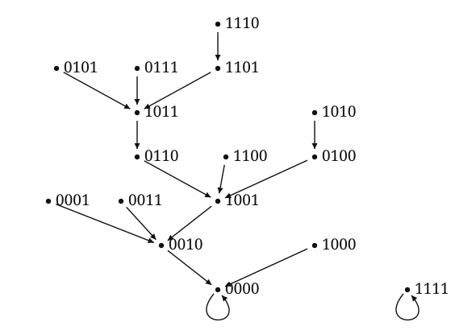

Boolean Monomial Dynamics
Every orbit of a map on a finite set eventually becomes periodic. For Boolean monomial systems, iterates can be translated into directed walks in the dependency graph. We investigate how acyclic subgraphs and the arithmetic of cycle lengths can help bound the longest transient.

Transients
Boolean networks provide discrete models of gene regulation in which binary variables represent gene activity and coordinate update functions encode regulatory interactions. [1] Periodic orbits represent persistent activity patterns. The transient length of an initial state is the least number of iterations required to reach a periodic state; it is zero precisely when the initial state is periodic.
In the state-transition graph, each state has one outgoing edge, to its image. This graph determines every transient length, but a system on \(n\) Boolean variables has \(2^n\) states. Our research asks how to estimate these lengths from the much smaller dependency graph.
The dependency graph
Here we consider Boolean monomial maps \(f:\{0,1\}^n\to\{0,1\}^n\) with coefficient \(1\) in every coordinate. Write the state vector as \(\mathbf x=(x_1,\ldots,x_n)\) and the coordinate functions as \(f_1,\ldots,f_n\). For each \(i\), an index set \(N_i\subseteq\{1,\ldots,n\}\) specifies the variables in the coordinate monomial:
Each product is the logical conjunction of its factors. The empty product is taken to be \(1\), and all coordinates are updated simultaneously. Some definitions also allow a coordinate that is identically zero; those maps are outside the scope of this note.
The dependency graph \(D_f\) has vertex set \(\{1,\ldots,n\}\) and an edge \(i\to j\) if and only if \(j\in N_i\), equivalently, if \(x_j\) divides \(f_i\). We use the output-to-input convention: an edge points from a coordinate to a variable on which its update depends.
The sets \(N_i\) determine the coordinate functions, so \(D_f\) records the full system on \(n\) vertices. Colón-Reyes, Laubenbacher, and Pareigis used this representation to study the periodic behavior of Boolean monomial systems. [2]
For example, consider
Here \(N_2=\{1,3\}\), giving the edges \(2\to1\) and \(2\to3\); the remaining coordinate functions give \(1\to2\), \(3\to4\), and \(4\to2\).

Iterates and directed walks
Successive substitution expresses each coordinate of an iterate in terms of the initial variables. In the displayed example, \((f^2)_2(\mathbf x)=f_1(\mathbf x)f_3(\mathbf x)=x_2x_4\). The two corresponding walks of length \(2\) from vertex \(2\) are \(2\to1\to2\) and \(2\to3\to4\), whose endpoints index the variables occurring in \((f^2)_2\).
More generally, let \(f^m\) denote \(m\) successive applications of \(f\), and let \((f^m)_i\) be its \(i\)th coordinate. For \(m\geq1\), the variable \(x_j\) occurs in \((f^m)_i\) if and only if \(D_f\) has a directed walk of length \(m\) from \(i\) to \(j\). A directed walk may repeat vertices and edges; its length is the number of edges traversed. If several walks have the same endpoint, substitution may produce repeated factors. These collapse to one factor by the Boolean identity \(x_j^2=x_j\). This is the coefficient-\(1\) case of Proposition 2.3 in Colón-Reyes et al. [2]
It remains to determine the attainable walk lengths between ordered pairs of vertices. Let \(\tau_f(\mathbf x)\) denote the transient length of an initial state \(\mathbf x\). The maximum transient length is
Paths and cycles
Fix a directed walk of length \(L\) from \(u\) to \(v\) that visits a vertex on each of some directed cycles of lengths \(c_1,\ldots,c_s\). At each visit, insert any nonnegative number of full traversals of that cycle. This constructs walks from \(u\) to \(v\) of lengths \(L+q_1c_1+\cdots+q_sc_s\), with integers \(q_i\geq0\). The connecting walks are included in \(L\); this construction need not describe every possible walk.
Deleting selected edges leaves an acyclic subgraph, where every directed walk has no repeated vertices and therefore has length at most \(n-1\) on \(n\) vertices. Restoring the deleted edges allows repeated traversals of cycles. The resulting walk lengths depend on the cycle lengths and on the paths connecting the cycles.

For positive cycle lengths \(c_1,\ldots,c_s\) with greatest common divisor \(1\), the nonnegative integer combinations \(q_1c_1+\cdots+q_sc_s\) form a numerical semigroup. Its Frobenius number is the largest integer not expressible as a nonnegative integer linear combination of the cycle lengths. Every larger integer admits such a representation. If a generator is \(1\), every nonnegative integer is represented and the Frobenius number is \(-1\). [3, §1] If the gcd is greater than \(1\), infinitely many integers are missing, so there is no finite Frobenius number for these generators.
For example, \(2\) and \(3\) generate every integer at least \(2\), but do not generate \(1\), so their Frobenius number is \(1\): every even number is a multiple of \(2\), and every odd number at least \(3\) is \(3\) plus an even number. Thus, if a chosen walk of length \(L\) visits both a \(2\)-cycle and a \(3\)-cycle, inserting full traversals produces every walk length at least \(L+2\) between its endpoints.
An exact transient
For the four-variable map displayed above, direct evaluation of all \(16\) states gives \(\tau_{\max}(f)=6\). The only periodic states are the fixed points \(0000\) and \(1111\). The orbit starting at \(1110\) takes six steps to reach \(0000\):
The full state-transition graph at the top of this page shows that every other state reaches a fixed point in at most five steps. For larger systems, we are investigating how to obtain transient bounds from attainable walk lengths without enumerating all states; the 2024 poster describes this direction of work.
References
- S. A. Kauffman, “Metabolic stability and epigenesis in randomly constructed genetic nets,” Journal of Theoretical Biology 22 (1969), 437–467. Paper · DOI
- O. Colón-Reyes, R. Laubenbacher, and B. Pareigis, “Boolean monomial dynamical systems,” Annals of Combinatorics 8 (2005), 425–439. Paper · DOI
- J. L. Ramírez Alfonsín and Ø. J. Rødseth, “Numerical semigroups: Apéry sets and Hilbert series,” Semigroup Forum 79 (2009), 323–340. Paper · DOI